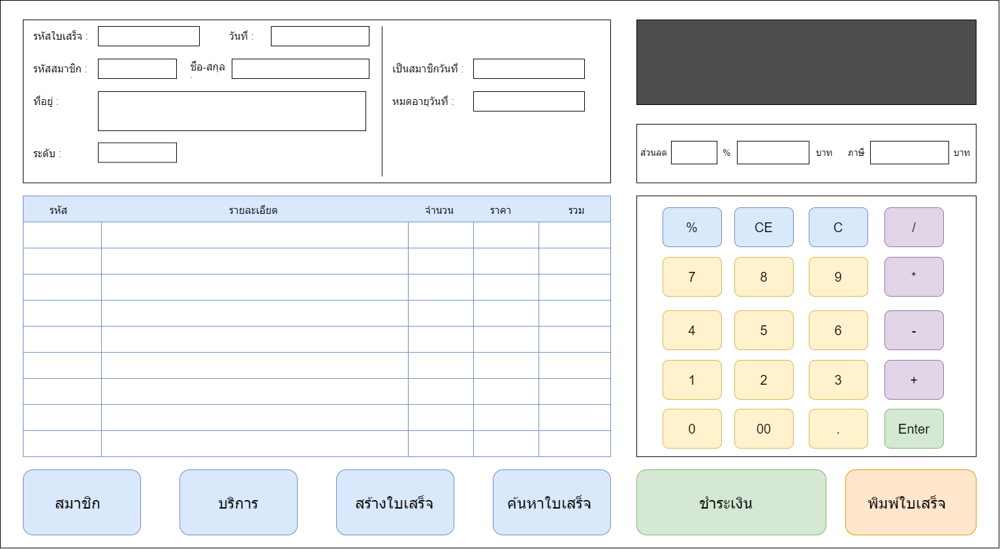

UX/UI ระบบ POS Fitness

ระบบ POS Fitness เป็นระบบคิดเงินสำหรับสมาชิก Fitness ที่สามารถเลือกใช้บริการได้หลากหลาย
มีประเภทของบริการอีก 3 ประเภท คือ 1. บริการวัน 2. บริการรายเดือน 3. บริการรายปีและ
ระดับการใช้บริการ 3 ประเภท คือ 1. สมาชิกทั่วไป 2. สมาชิกพิเศษ 3. สมาชิก VIP ก็จะมีราคาตและส่วนลดต่างกัน
รายละเอียดของ UX/UI
- ด้านซ้ายบน มีพอร์มรายละเอียดใบเสร็จให้กรอก
- ด้านขวาบน เป็นหน้าจอสำหรับเสดงยอดเงิน
- กลางหน้าจอซ้าย เป็นตารางสำหรับแสดงรายการของบริการที่ใช้ใน Fitness แสดงจำนวนและราคา
- กลางหน้าจอซ้าย มีปุ่มสำหรับป้อนตัวเลข
- ด้านล่าง เป็นปุ้มเมนูต่างๆ
- สมาชิก สำหรับจัดการข้อมูลสมาชิกใน Fitness
- บริการ สำหรับจัดการข้อมูลบริการใน Fitness
- สร้างใบเสร็จ สำหรับสร้างใบเสร็จตอนคิดเงิน
- ค้นหาใบเสร็จ สำหรับค้นหาใบเสร็จที่ย้อนหลังในระบบ
- ชำระเงิน สำหรับคำนวณยอดเงินสุทธิที่ต้องจ่าย
- พิมพ์ใบเสร็จ สำหรับพิมพ์ใบเสร็จ